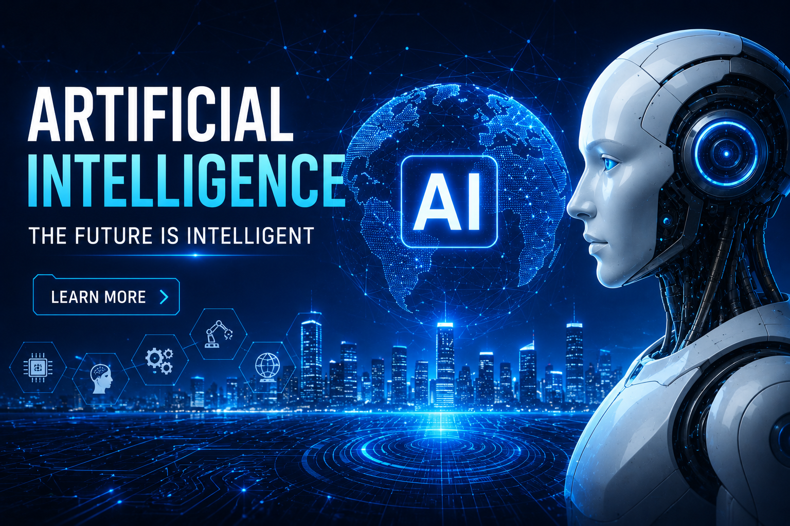

Artificial Intelligence

Artificial Intelligence, commonly called AI, is one of the most revolutionary technologies in the modern digital world. AI refers to the ability of machines and computer systems to perform tasks that normally require human intelligence, such as learning, reasoning, decision-making, problem-solving, language understanding, and image recognition. AI has become a major part of everyday life, even when people do not realize it. From voice assistants like Siri and Alexa to recommendations on YouTube, Netflix, and online shopping platforms, AI is working behind the scenes to improve user experience. AI helps organizations automate repetitive tasks, improve productivity, reduce human errors, and create smarter systems for faster operations.
AI is transforming industries such as healthcare, education, banking, agriculture, transportation, cybersecurity, and entertainment. In healthcare, AI helps in disease detection and patient monitoring. In education, it supports personalized learning and smart tutoring systems. AI also plays an important role in robotics, automation, self-driving vehicles, and digital assistants. As technology continues to grow rapidly, AI is becoming more intelligent and useful, helping humans solve complex real-world problems efficiently and opening the door to future innovations.